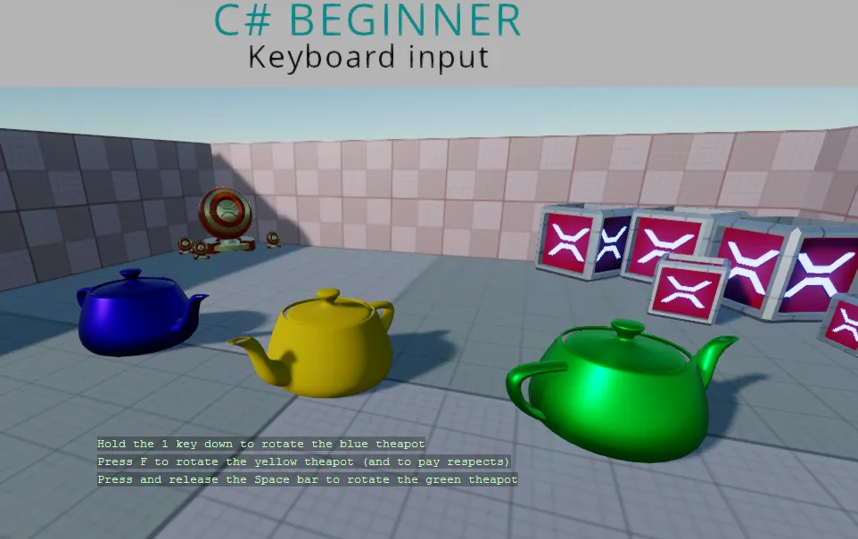

Keyboard input
You can find this sample in the tutorial project: Menu → Keyboard input
Explanation
This C# Beginner tutorial covers how to handle keyboard input.
We can check for the existence of a keyboard and then we can use various methods to check if a key is pressed, held down or released.

Code
using Stride.Core.Mathematics;
using Stride.Engine;
using Stride.Input;
namespace CSharpBeginner.Code
{
/// <summary>
/// This script demonstrates how to check for keyboard input.
/// <para>
/// https://doc.stride3d.net/latest/en/tutorials/csharpbeginner/keyboard-input.html
/// </para>
/// </summary>
public class KeyboardInputDemo : SyncScript
{
public Entity BlueTeapot;
public Entity YellowTeapot;
public Entity GreenTeapot;
public override void Start() { }
public override void Update()
{
// First lets check if we have a keyboard.
if (Input.HasKeyboard)
{
// Key down is used for when a key is being held down.
DebugText.Print("Hold the 1 key down to rotate the blue teapot", new Int2(340, 500));
if (Input.IsKeyDown(Keys.D1))
{
var deltaTime = (float)Game.UpdateTime.Elapsed.TotalSeconds;
BlueTeapot.Transform.Rotation *= Quaternion.RotationY(0.3f * deltaTime);
}
// Use 'IsKeyPressed' for a single key press event.
DebugText.Print("Press F to rotate the yellow teapot (and to pay respects)", new Int2(340, 520));
if (Input.IsKeyPressed(Keys.F))
{
YellowTeapot.Transform.Rotation *= Quaternion.RotationY(-0.4f);
}
// 'IsKeyReleased' is used for when you want to know when a key is released after being either held down or pressed.
DebugText.Print("Press and release the Space bar to rotate the green teapot", new Int2(340, 540));
if (Input.IsKeyReleased(Keys.Space))
{
GreenTeapot.Transform.Rotation *= Quaternion.RotationY(0.6f);
}
}
}
}
}